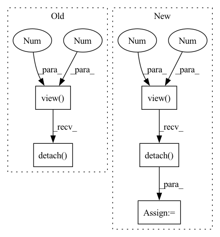

Pattern ID :565

Before Change
def calc_bandwidth(set1, set2, kernel_num=10):
batch_size = set1.size(0)
seq_len = set2.size(0)
set1_centre = set1.mean(-1).view(-1, 1)
set2_centre = set2.mean(-1).view(1, -1)
distance = (set1_centre - set2_centre).pow(2).pow(0.5).max(-1)[0].max(-1)[0]
delta_list = [distance / np.sqrt(2 * (i + 1)) for i in range(kernel_num)]
bandwidth_list = [((2 * delta ** 2)).detach() for delta in delta_list]
return bandwidth_list
After Change
particle_num = first_kernel.size(-1)
kernel_num
scale_list = list(np.linspace(min_scale, max_scale, num=kernel_num))
bandwidth_list = [(kernel_mean * scale).view(-1, 1, 1).detach() for scale in scale_list]
first_items = 0
third_items = 0
for h in bandwidth_list:
In pattern: SUPERPATTERN
Frequency: 3
Non-data size: 5
Instances
Fragment ID: 2874683
Project Name: deligentfool/dqn_zoo
Commit Name: 1ac00bac8d92870064cdcf754b6e29278f14ae79
Time: 2020-11-04
Author: 1027660817@qq.com
File Name: MMD_DQN/mmd_dqn.py
M Class Name: AnonimousClass
N Class Name: AnonimousClass
M Method Name: calc_bandwidth(5)
N Method Name: calc_bandwidth(3)
M Parent Class:
N Parent Class:
M File Name: MMD_DQN/mmd_dqn.py
N File Name: MMD_DQN/mmd_dqn.py
M Start Line: 33
M End Line: 40
N Start Line: 18
N End Line: 33
'>
Before Change
curr_qval = torch.stack(curr_qval, dim=0)
//Quantile Regression Loss
target_q = target_q.view(batch_size, -1, 1).expand(-1, num_support, num_support).detach()
curr_q = curr_qval.view(batch_size, 1, -1).expand(-1, num_support, num_support)
diff = target_q - curr_q
soft_diff = torch.where(torch.abs(diff)<=k, 0.5*torch.pow(diff, 2), \
k*(torch.abs(diff) - 0.5*k))
After Change
supports_a = torch.stack(supports_a, dim=0) //just convert to tensor
//============== Quantile Regression Loss Calculation =================
target_supports = target_supports.view(batch_size, -1, 1).expand(-1, num_support, num_support).detach()
supports_a = supports_a.view(batch_size, 1, -1).expand(-1, num_support, num_support)
diff = target_supports - supports_a
//Huber loss calculation
soft_diff = torch.where(torch.abs(diff)<=k, 0.5*torch.pow(diff, 2), \
'>
Fragment ID: 2874682
Project Name: rl-max/deep-reinforcement-learning-pytorch
Commit Name: 83ecade63b6b16c9ded7a497e1d73670b5aa9ee6
Time: 2021-07-19
Author: poiroth946@gmail.com
File Name: qr-dqn.py
M Class Name: AnonimousClass
N Class Name: AnonimousClass
M Method Name: train(4)
N Method Name: train(4)
M Parent Class:
N Parent Class:
M File Name: qr-dqn.py
N File Name: qr-dqn.py
M Start Line: 54
M End Line: 69
N Start Line: 71
N End Line: 97
'>
Before Change
// * kernel: [batch_size, particle_num, particle_num]
kernel_mean = kernel.mean(-1).max(-1)[0]
scale_list = list(np.linspace(min_scale, max_scale, kernel_num))
bandwidth_list = [(kernel_mean * scale).view(-1, 1, 1).detach() for scale in scale_list]
return bandwidth_list
After Change
def calc_bandwidth(set1, set2, kernel_num=10):
batch_size = set1.size(0)
seq_len = set2.size(0)
set1_centre = set1.mean(-1).view(-1, 1)
set2_centre = set2.mean(-1).view(1, -1)
distance = (set1_centre - set2_centre).pow(2).pow(0.5).max(-1)[0].max(-1)[0]
delta_list = [distance / np.sqrt(2 * (i + 1)) for i in range(kernel_num)]
bandwidth_list = [((2 * delta ** 2)).detach() for delta in delta_list]
return bandwidth_list
'>
Fragment ID: 2874685
Project Name: deligentfool/dqn_zoo
Commit Name: 23f02caeca29f856c16efb0b1f26b0bfbf15efe9
Time: 2020-10-28
Author: 1027660817@qq.com
File Name: MMD_DQN/mmd_dqn.py
M Class Name: AnonimousClass
N Class Name: AnonimousClass
M Method Name: calc_bandwidth(3)
N Method Name: calc_bandwidth(4)
M Parent Class:
N Parent Class:
M File Name: MMD_DQN/mmd_dqn.py
N File Name: MMD_DQN/mmd_dqn.py
M Start Line: 10
M End Line: 14
N Start Line: 32
N End Line: 39